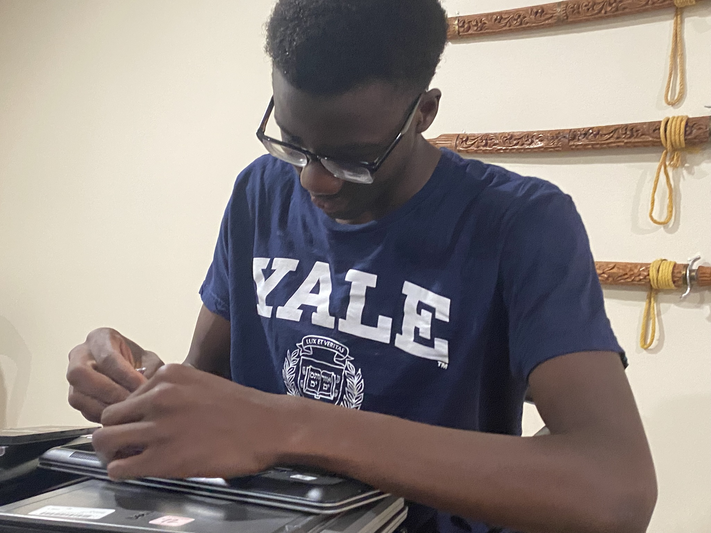

Hassane Doucoure · Engineering portfolio
I build, test, learn, and come back with a better version.
I’m interested in biomedical engineering because good design can make healthcare safer and more accessible. This portfolio is a record of what I have actually worked on: clinical problems, CAD, electronics, manufacturing, community projects, and the mistakes that pushed each idea forward.
Everything in one place
Choose a section and dig into the work.
I organized the site so you can skim quickly or open a full project and follow the process from start to finish.
Internships
Clinical design at Carilion, hands-on testing, surgical observation, and what I learned from real engineering workplaces.
View sectionProjects
Ten builds, from cardboard structures and mechanisms to electronics, CAD, and community technology.
View sectionField Trips
The details I noticed inside research labs, factories, and technology companies across Virginia.
View sectionGuest Speakers
Advice from engineers, researchers, alumni, and communication professionals that I actually used afterward.
View sectionCertifications
OSHA 10, MATLAB, and ToolingU training, along with the skills I took from each course.
View sectionRésumé & Leadership
My education, experience, awards, debate, athletics, service, and current résumé in one place.
View sectionWorkplace Readiness
How interviews, team projects, and feedback changed the way I explain my work and work with other people.
View sectionFeatured experience
Carilion Clinic Biodesign Internship
I came into this internship expecting to work on medical devices. What I learned first was that the device is only one part of the problem. I researched needs reported by clinicians, tested a liquid-measurement mechanism, and observed surgery and post-operative care. Every part of the experience made me pay closer attention to safety, workflow, and the person using the design.
Read the full internship storySelected work
Four projects that show how I think.

Second Life Laptops
How could our team turn a small budget and a stack of used laptops into reliable computers for students who needed them?
Open case study
AquaTec Water Filtration
Could I improve the water from an older school fountain without creating a filter that was too expensive or difficult to maintain?
Open case study
Photoresponsive Night Light
Could I make a light that switched on automatically in the dark and fit the entire circuit inside an enclosure I designed myself?
Open case study
Arduino Control Studies
I wanted to understand how an Arduino turns a sensor reading or timing instruction into something I could actually see happen.
Open case studyStill building
This portfolio will keep growing with every new project and experience.
I’ll keep adding the work itself, not just the final result.